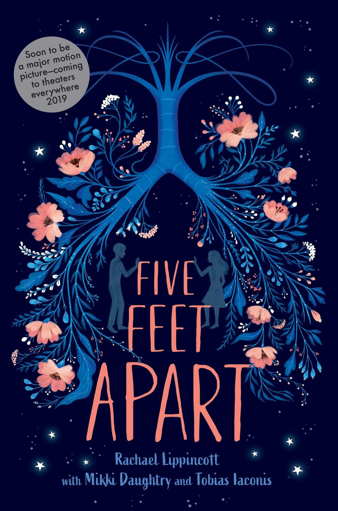

Top 3 Picks

⭐⭐⭐⭐
After years of avoiding each other, Daisy Darker’s entire family is assembling for Nana’s 80th birthday party in Nana’s crumbling gothic house on a tiny tidal island. Finally back together one last time, when the tide comes in, they will be cut off from the rest of the world for eight hours. The family arrives, each of them harboring secrets. Then at the stroke of midnight, as a storm rages, Nana is found dead. And an hour later, the next family member follows… Trapped on an island where someone is killing them one by one, the Darkers must reckon with their present mystery as well as their past secrets, before the tide comes in and all is revealed. With a wicked wink to Agatha Christie’s And Then There Were None, Daisy Darker’s unforgettable twists will leave readers reeling.

⭐⭐⭐⭐⭐
Stella Grant likes to be in control—even though her totally out of control lungs have sent her in and out of the hospital most of her life. At this point, what Stella needs to control most is keeping herself away from anyone or anything that might jeopardize the possibility of a lung transplant. The only thing Will Newman wants to be in control of is getting out of this hospital. He couldn’t care less about his treatments, or a fancy new clinical drug trial. Soon, he’ll turn eighteen and then he’ll be able to unplug all these machines and actually go see the world, not just its hospitals. Will’s exactly what Stella needs to stay away from. Either one of them could die. The only way to stay alive is to stay apart. Six feet apart.